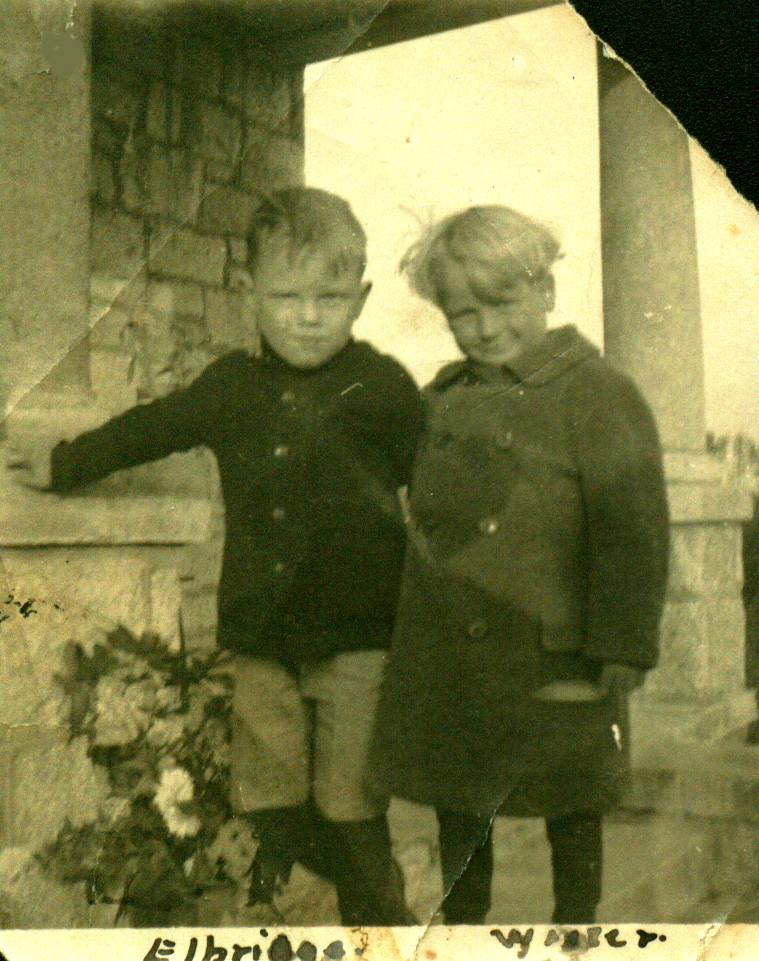

The Family Chronicle
No.28 September 28, 2002
__________
The readership of the Chronicle is growing and I am delighted, as a result, to re-establish contact with three “first cousins once removed” - Donald Edge, Shirley MacKay and Tina (Watling) Newton. Great to hear from you and thanks, Donald, for the family tree information. I did not have much about the MacNaughton side and you have allowed me to extend my knowledge.
Photo

The above photo shows my brother, Walter (1913-1998) on the right and his first cousin, George Elbridge Watling (born 1913), on the left. I am not sure when or where the photo was taken however, it may have been taken in Hampton, Virginia where my father and Uncle George, Elbridge’s father, worked together on the Langley Field project.
For the benefit of other readers, this is what I have on my MacNaughton roots. Information about Scotland came mostly from Donald Edge.
John MacNauchtan was born at Dunderave Castle, Scotland and died (before 1750) at Glenlyon, Perthshire, Scotland. His son, Malcolm was also born at Dunderave Castle and died at Glenlyon.
Malcolm’s son, John, was also born (July 24, 1774) at Dunderave Castle; he married Catherine Stewart and they had eight children. John died in Scotland. Several of John’s children and his widow came to Black River. One son, Alexander (1789-1849) married Janet Jack; they had four daughters one of whom, Christina, (1822 - 1901) married my Great Grandfather, Jubal (1823-1900) who was the son of Jubal Watling and Susan Leach.
Jubal and Christina’ s son, Jubal (1846-1915) married Grace McAskill MacDonald (1848-1934). Their children were Christina Catherine MacKenzie, Elspeth Jardine MacNaughton, Jubal George Watling, Janet MacDonald Godfrey, John MacDonald Watling, James Alexander William Watling, Jane Elizabeth Jardine Glendenning, and Donald Ernest Watling.
We always kept a few pigs at our place and it seems to me that we spent all of our time feeding them. They often got a mixture of oats, barley and bran (just like seniors and their bran flakes). And of course either water or milk depending on the age of the pigs and any surplus milk. In addition, a favourite at our place was either cooked potatoes or turnips.
There was an old shed just outside our back door – probably 10 to 15 feet from the house. It was not large – perhaps 8 by 12 feet and inside was a huge cooker. I am not sure what the pot was made from but I think that it was probably 6 feet long and maybe three feet wide and 15 to 16 inches deep. As a kid, it seemed very large to me. It was set on a brick base so that a fire could be lighted under it.
Turnips were dumped into the tub, water was added, the turnips were cooked. We likely cooked potatoes there as well abut I only remember the turnips. Cooking took a lot wood, which was hauled, to the shed on a hand sled. When finished, potatoes were put into a 10-quart pail, meal was added and the turnips were mashed by pushing a stick, a piece of stove wood from the woodpile, down into the pail. When the turnips cooled, they were carried to the barn and emptied into the pig’s trough.
Readers who eat turnip will know the strong aroma; imagine cooking large quantities several times a week in a building only used for that purpose. By the way, the old cook shed was torn down in the early 1940’s when John built a garage for our 1939 Ford truck.
Sometimes potatoes were cooked on the kitchen stove for the same purpose. A huge pot of potatoes would be boiled and the process would be repeated as with turnips.
At our house the kitchen stove was more or less at one end of the kitchen and the back door was reached through a little room at the other end. I remember once, a pot of hot potatoes hot off the stove was sitting on the floor near the back door. It was winter; the floor was wet from snow being carried in on many feet. I was heading for the back door - presumably running, slipped and rammed my arm into the hot pot of potatoes. For years the burn mark could be seen on my forearm.
Those who know me will acknowledge that my stories often contain some bull. While at the recent family reunion, I was recalling my memories of being on a picnic and chased by a bull. I thought that Grace was there but wasn’t sure. Ken vouches that the story is true and filled in some of the details.
In 1924, Dad bought the property across from the Presbyterian Church from Dan MacLean. Later, Walter buildt a home on the property.
Some time in the early 1930’s, Walter and likely John ,along with Bert Macdonald who worked regularly at home, were cutting alders/bushes along Walter’s brook one fine summer’s day. In the late morning, Ken, Marjorie Watling and I, and perhaps Grace and ??? took a horse and wagon, it was only two miles, to take the men their lunch, and to have a picnic. While picnicking, a bull grazing nearby began to move closer and closer although he did not actually charge us. The bull was somewhat reluctant to leave but Bert drove him away while we scrambled through a wire fence into the next field. It was exciting. It seems to me that there was a photo of us having our picnic but I am not sure.
Chronicle is an occasional newsletter published by Don Glendenning It is intended to solicit and provide information about family tree matters. Comments, enquiries and information may be sent to 62 Queen Elizabeth Drive, Charlottetown, PEI, C1A 3A9. Tel:902-892-5859 Email dglende @attglobal.net. Feel free to make and pass along copies of this newsletter